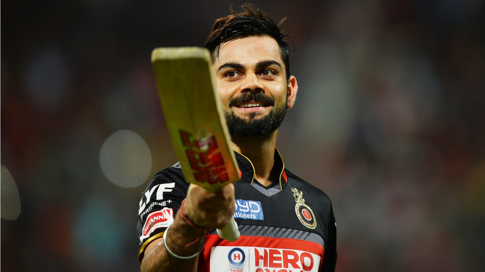

Best batsman
Number of times each team scored more than 200
Number of half centuries sored by a player
Number of sixes hit by a player
Number of boundaries hit by a player
BEST BATSMAN
No doubt Virat Kohli is the best batsman in all the formats of cricket.Based on maximun runs scored by a batsman in IPL,some of the best batsmans in IPL are sorted out and visualised.
 Number of centuries scored by a player
Hundreds are the milestone for every player.These hundreds can turn any match upside down and can be a winning point to the team.Chris Gayle holds the most number of centuries in IPL.The players with most of the centuries in whole of IPL is sorted out by the code and represented in the graph shown.
>Number of half centuries scored by a player
Getting a half century is as good as getting the full on confidence of a player.It is a small mark before setting up a thunder in the field.The most half centuries in IPL is held David Warner with tremendous 44 half centuries.This data is visualised the graph.
Number of sixes hit by a player
Sixes are the factors which excites the crowd in any period of match.Fans wait for theie favourite player to hit a biggie.The players with most number of sixes are sorted and some of them are represented in the graph.
Number of fours hit by a player
No surprise but AB De Villers holds the most number of fours too.He is also known as Mr.360 for his batting ablities and is appritiated all over the world for his shot seletion.The players with most number of fours is sorted out and represented